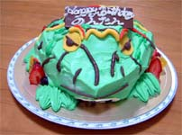

のんたんカエルおめでとう！誕生日はカエルケーキ！ 【熊本発のんたん同志記者】今年のＢＤケーキの報告です。 今年のモデルは、チョコエッグのベルツノ（ノーマル）。出来ればもっとグロにして欲しかったなぁ・・・来年はまた別のケーキ屋さんに頼もうっと！！ちなみに私のＢＤは、１０月２日です。全国のカエラーのみなさん。誕生日は、近所のケーキやさんに特注カエルケーキを注文しましょう。（*＾ー＾）ふふ。
のんたん様直筆署名@ @ (----) ((_ _)) ~~ ~~ パティシエ志願者はカエルケーキに挑め！【全国かえる奉賛会】うおおおおおおおお。のんたん！今年もカエルケーキでお祝なんて、素晴らしすぎるぞおおおおおおおおおおおおおおん。しかもベルツノカエルケーキとは！来年はもう、緑いろだけでなく、茶色でまだら模様が入ったカエルケーキにも挑戦してほしいぞ。注文を受けたお菓子職人にとっても、イチネンに一度きりの腕のみせどころ、来年は『ぜひとも、わがケーキ屋に発注してください！』と、引く手あまたに違い無い！ 全国のケーキ職人は、いまのうちから、１０月２日を目指して、よりリアルなカエルケーキ作りに腕をみがいておこうではないかあああああああああああ。のんたん！誕生日おめでとう。 なお、当日の様子などを、のんたん同志の投稿を待っているので、よろしくおねがいします！のんたん！動画も可なり。 カエラーの彼女には、カエルプレゼントを！【全国かえる奉賛会】カエラーの彼女を持つ人は、彼女の誕生日や婚約のときには、迷わずカエル製品を献上しようではないかああああああああああああああああ。結婚指輪とかも、カエルデザインだなーっ！ 全国のカエラー女性のみなさああああああん。彼氏や旦那や愛人から『あたしは、こんなカエルをもらったのよおおおおお』てえ自慢したいひとがいたら、投稿してくだせええええええっ。カエラー彼女を持つ、全国の男の参考になるであろうぞおおおおおお。よろしくう。カエル少年を捜せ！悲劇の結末！【大韓民国発東京のkero同志記者】非カエル系新聞に掲載されていたんですが、韓国では11年前、「山でカエルを捕まえる」と言い残した５人の少年が、消息をたった事件があったそうです。当時は大統領が捜査本部の直接指揮をとるなど、「カエル少年を捜せ」の大キャンペーンが展開され、「帰ってこいカエル少年」という映画も上演されるなど、国民的関心事であったのだが、このほど、不明になった近くの山中で５人の遺体が発見され、謎の事件は悲劇的な展開をみせたらしい。 全国や世界中のカエル好きのみなさんがこういった事件に巻き込まれることがないようにと思っています。
【全国かえる奉賛会】５少年の御冥福をお祈りしたいと思います。合掌。遺体のそばで銃弾も発見されたとのこと。新たな展開がありそうですが、その後の情報も待ちましょう。合掌。
投稿採用者に武功カエル徽章を授与！ |


かえる古新聞過去に取り上げた記事を見出し付きで一覧したい人は、ここをクリック◆創刊号を見る◆先週号を見る◆話題の号を見る◆かえる新聞の昔を読む
|
私も入っています。。全国かえる奉賛会
大王様に会うには、このバナーをクリック。ずっと奥に写真館があるぞ。全国かえる奉賛会に入会するには、自分のホームページのどこかに、下の部分を追加するとバナーがリンク付きで表示されるぞ。どんどん入会しましょー |


|